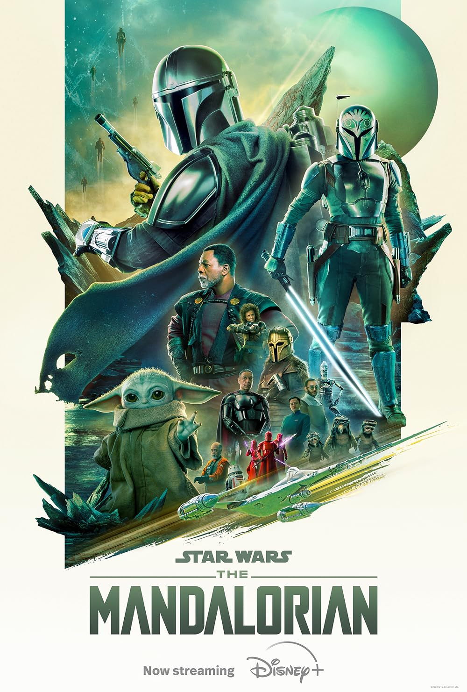

Definición
Los medios audiovisuales en diseño gráfico se refieren a la combinación de elementos visuales y auditivos para comunicar un mensaje de manera efectiva.
Los medios audiovisuales son medios de comunicación social que utilizan imágenes y grabaciones para comunicar mensajes específicos. Algunos ejemplos de medios audiovisuales son:
- Películas y cine
- Series de televisión
- Documentales
- Publicidad y anuncios comerciales
- Videojuegos
- Contenido en streaming
- Videos en redes sociales
- Transmisiones en vivo
- Fotografías
- Diapositivas
- Videos
- Podcast
- Canciones

Importancia en el Diseño Gráfico
Los medios audiovisuales son cruciales en el diseño gráfico debido a su capacidad para captar la atención del espectador de manera efectiva, transmitir emociones y adaptarse a diferentes plataformas y audiencias.
El diseño gráfico juega un papel fundamental en la creación de proyectos audiovisuales. A través de su implementación adecuada, se puede lograr una comunicación efectiva, generar impacto visual y transmitir mensajes de manera clara y persuasiva.
El diseño gráfico y audiovisual combinados permiten transmitir mensajes de manera visualmente impactante y generar emociones en la audiencia. Además, ayudan a diferenciarse y destacar frente a la competencia.
Se encarga de trasmitir un mensaje o alguna idea, propuesta o pensamiento, con la ayuda de elementos gráficos.

Tipos de Medios Audiovisuales
Cine:
El cine es un medio audiovisual que utiliza imágenes en movimiento para contar una historia. Las películas se pueden ver en salas de cine, en casa o en dispositivos portátiles.
Televisión:
La televisión es un medio audiovisual que transmite imágenes y sonidos en vivo o grabados. La televisión se puede ver en televisores, computadoras y dispositivos móviles.
Video:
El video es un medio audiovisual que se graba y se reproduce utilizando un dispositivo electrónico. Los videos se pueden ver en computadoras, televisores, dispositivos móviles y en línea.
Multimedia:
La multimedia es un medio audiovisual que combina varios formatos de medios, como video, audio, imágenes y texto. La multimedia se puede utilizar para crear presentaciones, sitios web y videojuegos.
Internet:
Internet es una red global de computadoras que permite a los usuarios acceder a una amplia variedad de recursos, incluidos medios audiovisuales. Los videos, la música y las imágenes se pueden transmitir o descargar de Internet.
Los medios audiovisuales tienen una serie de ventajas sobre otros medios de comunicación, como:
- Son atractivos: Las imágenes y los sonidos pueden captar la atención de la audiencia y mantenerla interesada.
- Son informativos: Los medios audiovisuales pueden transmitir mucha información en poco tiempo.
- Son emocionales: Las imágenes y los sonidos pueden evocar emociones en la audiencia.
- Son versátiles: Los medios audiovisuales se pueden utilizar para una amplia variedad de propósitos.
Herramientas y Software
Algunas herramientas y software utilizados incluyen:
 Adobe Premiere Pro:Adobe Premiere Pro es un editor de video
profesional que se utiliza
en
una amplia variedad de producciones, desde videos musicales hasta películas de Hollywood. Es una
herramienta poderosa y versátil, pero también puede ser costosa y compleja de aprender.
Adobe Premiere Pro:Adobe Premiere Pro es un editor de video
profesional que se utiliza
en
una amplia variedad de producciones, desde videos musicales hasta películas de Hollywood. Es una
herramienta poderosa y versátil, pero también puede ser costosa y compleja de aprender.
- Final Cut Pro X: Final Cut Pro X es un editor de video profesional que es exclusivo de las computadoras Mac. Es una herramienta popular entre los editores de video que trabajan en entornos Mac.
- DaVinci Resolve:DaVinci Resolve es un editor de video gratuito y de código abierto que ofrece muchas de las mismas funciones que los editores de video profesionales pagos. Es una buena opción para usuarios que buscan una herramienta poderosa y económica.
- Adobe Audition: Adobe Audition es un editor de audio profesional que se utiliza para editar, mezclar y masterizar audio. Es una herramienta poderosa y versátil, pero también puede ser costosa y compleja de aprender.
- Logic Pro X: Logic Pro X es un editor de audio profesional que es exclusivo de las computadoras Mac. Es una herramienta popular entre los productores de audio que trabajan en entornos Mac.
- Audacity: Audacity es un editor de audio gratuito y de código abierto que ofrece muchas de las mismas funciones que los editores de audio profesionales pagos. Es una buena opción para usuarios que buscan una herramienta poderosa y económica.
 Adobe Photoshop:
Adobe Photoshop es un editor de imágenes rasterizado que se utiliza para
editar y crear imágenes. Es la herramienta estándar de la industria para la edición de fotos y se
utiliza ampliamente en una variedad de otras aplicaciones, como diseño gráfico y desarrollo web.
Adobe Photoshop:
Adobe Photoshop es un editor de imágenes rasterizado que se utiliza para
editar y crear imágenes. Es la herramienta estándar de la industria para la edición de fotos y se
utiliza ampliamente en una variedad de otras aplicaciones, como diseño gráfico y desarrollo web.
 Adobe Illustrator:
Adobe Illustrator es un editor de gráficos vectoriales que se utiliza para
crear ilustraciones y logotipos. Es una herramienta popular entre los diseñadores gráficos y se utiliza
ampliamente en una variedad de aplicaciones, como diseño de empaques y señalización.
Adobe Illustrator:
Adobe Illustrator es un editor de gráficos vectoriales que se utiliza para
crear ilustraciones y logotipos. Es una herramienta popular entre los diseñadores gráficos y se utiliza
ampliamente en una variedad de aplicaciones, como diseño de empaques y señalización.
 GIMP:
GIMP es un editor de imágenes gratuito y de código abierto que ofrece muchas de las
mismas funciones que los editores de imágenes profesionales pagos. Es una buena opción para usuarios que
buscan una herramienta poderosa y económica.
GIMP:
GIMP es un editor de imágenes gratuito y de código abierto que ofrece muchas de las
mismas funciones que los editores de imágenes profesionales pagos. Es una buena opción para usuarios que
buscan una herramienta poderosa y económica.
 Blender:
Blender es una suite de creación 3D gratuita y de código abierto que se utiliza para
crear modelos 3D, animaciones, efectos visuales y juegos. Es una herramienta poderosa y versátil, pero
también puede ser compleja de aprender.
Blender:
Blender es una suite de creación 3D gratuita y de código abierto que se utiliza para
crear modelos 3D, animaciones, efectos visuales y juegos. Es una herramienta poderosa y versátil, pero
también puede ser compleja de aprender.
Tendencias y Tecnologías Emergentes
Tendencias y Tecnologías Emergentes en Medios Audiovisuales
El mundo de los medios audiovisuales está en constante evolución, con nuevas tecnologías y tendencias que surgen todo el tiempo. Estas innovaciones están cambiando la forma en que creamos, consumimos y experimentamos el contenido audiovisual.
Aquí hay algunas de las tendencias y tecnologías emergentes más importantes en medios audiovisuales:
Realidad virtual (VR) y Realidad aumentada (AR):
La VR y la AR están creando experiencias inmersivas que permiten a los usuarios interactuar con el contenido de una manera completamente nueva. La VR se utiliza para crear simulaciones de entrenamiento, juegos y experiencias de entretenimiento, mientras que la AR se utiliza para superponer información digital sobre el mundo real.
Inteligencia artificial (IA):
La IA se está utilizando para mejorar una variedad de aspectos de la producción audiovisual, desde la edición de video hasta la creación de efectos especiales. La IA también se está utilizando para desarrollar nuevas formas de contenido interactivo y personalizado.
Streaming:
El streaming se ha convertido en la forma dominante de consumir contenido audiovisual. Los servicios de streaming como Netflix, Hulu y Disney+ ofrecen una amplia gama de películas, programas de televisión y otros contenidos bajo demanda.
Video vertical:
El video vertical se está volviendo cada vez más popular, gracias al auge de las redes sociales como TikTok e Instagram. Las empresas están creando contenido específicamente para verse en dispositivos móviles en orientación vertical.
5G:
La tecnología 5G permitirá velocidades de transmisión de datos más rápidas, lo que hará posible la transmisión de contenido de mayor calidad y la creación de experiencias más inmersivas.
Producción remota:
La producción remota se está volviendo cada vez más común, ya que permite a las personas trabajar en proyectos audiovisuales desde cualquier lugar del mundo. Esto está haciendo que la producción audiovisual sea más accesible y asequible para las empresas de todos los tamaños.
Personalización:
Las empresas están utilizando datos y análisis para crear experiencias audiovisuales más personalizadas para los consumidores. Esto incluye la recomendación de contenido, la creación de contenido personalizado y la publicidad dirigida.
Estas son solo algunas de las tendencias y tecnologías emergentes que están dando forma al futuro de los medios audiovisuales. A medida que estas tecnologías continúen desarrollándose, podemos esperar ver aún más formas innovadoras de crear, consumir y experimentar el contenido.
Ejemplos de Proyectos Destacados
Aquí hay algunos ejemplos de proyectos audiovisuales sobresalientes que muestran las últimas tendencias y tecnologías en el campo:
1. Gravedad (2013): Esta película de suspenso de ciencia ficción dirigida por Alfonso Cuarón utilizó efectos visuales innovadores y tecnología 3D para crear una experiencia verdaderamente inmersiva para los espectadores. La película ganó siete premios de la Academia, incluyendo Mejor Director y Mejores Efectos Visuales Gravity (2013) movie poster
2. The Mandalorian (2019-presente): Esta serie de televisión del oeste con temática de ciencia ficción es el primer programa de Star Wars de acción real jamás realizado. Utiliza una nueva técnica de filmación revolucionaria llamada "StageCraft" que crea fondos virtuales realistas en tiempo real. El programa ha sido aclamado por sus efectos visuales, sus secuencias de acción y sus interpretaciones. Mandalorian (2019present) TV show poster
3. Spider-Man: Un Nuevo Universo (2018): Esta película animada de superhéroes cuenta la historia de Miles Morales, un adolescente que se convierte en Spider-Man después de ser mordido por una araña radiactiva. La película utiliza un estilo de animación único llamado "CGI dibujado a mano" que combina imágenes generadas por computadora con animación tradicional dibujada a mano. La película ganó un premio de la Academia a la Mejor Película Animada. SpiderMan: Into the SpiderVerse (2018) movie poster
4. Black Mirror (2011-2019): Esta serie de televisión de antología de ciencia ficción explora el lado oscuro de la tecnología. Cada episodio cuenta una historia diferente que se desarrolla en una realidad diferente donde la tecnología ha tenido un impacto negativo en la sociedad. El programa ha sido elogiado por sus historias que invitan a la reflexión y sus elegantes efectos visuales. Black Mirror (20112019) TV show poster
5. El Gran Hotel Budapest (2014): Esta película de comedia dramática dirigida por Wes Anderson es conocida por su estilo visual único, que incluye composiciones simétricas, colores brillantes y decorados intrincados. La película ganó cuatro premios de la Academia, incluyendo Mejor Diseño de Producción y Mejor Diseño de Vestuario. Grand Budapest Hotel (2014) movie poster
Estos son solo algunos ejemplos de los muchos proyectos audiovisuales sobresalientes que se están creando en la actualidad. Con el continuo desarrollo de nuevas tecnologías, podemos esperar ver trabajos aún más innovadores y pioneros en los próximos años.
Consejos y Mejores Prácticas
Planificación:
Define tus objetivos: ¿Qué quieres lograr con tu producción audiovisual? ¿Informar, entretener, persuadir? Tener objetivos claros te ayudará a tomar decisiones sobre el contenido, el estilo y el formato de tu producción.
Conoce a tu audiencia: ¿Quién es tu público objetivo? ¿Cuáles son sus intereses y necesidades? Comprender a tu audiencia te ayudará a crear contenido que sea relevante y atractivo para ellos.
Desarrolla un guión o un plan de rodaje: Un guión o un plan de rodaje te ayudará a organizar tus ideas y asegurarte de que tu producción tenga un flujo lógico.
Crea un presupuesto: ¿Cuánto dinero tienes para gastar en tu producción? Un presupuesto te ayudará a tomar decisiones sobre los recursos que puedes usar.
Producción:
Usa equipos de alta calidad: La calidad de tu equipo tendrá un gran impacto en la calidad de tu producción. Si es posible, invierte en equipos de buena calidad que te den resultados profesionales.
Ilumina bien tu escena: La iluminación es una parte importante de la producción audiovisual. Una buena iluminación puede ayudar a crear el ambiente adecuado y hacer que tus sujetos se vean mejor.
Graba un buen sonido: El sonido es tan importante como la imagen en la producción audiovisual. Asegúrate de usar un micrófono de buena calidad y graba en un lugar tranquilo.
Edita cuidadosamente: La edición es donde realmente puedes dar vida a tu producción. Tómate tu tiempo para editar tu metraje y crear una historia atractiva y coherente.
Postproducción:
Agrega música y efectos de sonido: La música y los efectos de sonido pueden ayudar a mejorar el ambiente y la emoción de tu producción.
Corrige el color: La corrección del color puede ayudar a que tu producción se vea más profesional y pulida.
Exporta tu video en un formato adecuado: Elige un formato de video que sea compatible con las plataformas en las que quieres compartir tu producción.
Marketing y distribución:
Promociona tu producción: Una vez que hayas terminado tu producción, es importante promocionarla para que la gente la vea. Puedes usar redes sociales, relaciones públicas y otras estrategias de marketing para llegar a tu público objetivo.
Distribuye tu producción: ¿Dónde quieres que la gente vea tu producción? Puedes distribuirla en línea, en festivales de cine o en televisión.
Consejos adicionales:
- Sé creativo: No tengas miedo de experimentar y probar cosas nuevas.
- Sé apasionado: Si no estás apasionado por tu proyecto, se notará en tu producción.
- Diviértete: La producción audiovisual debe ser agradable. ¡Diviértete y deja que tu creatividad fluya!